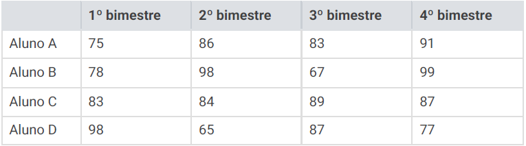

2.1 Média Aritmética Simples e Ponderada:
APRESENTAÇÃO
CONTEÚDO
EXERCÍCIOS PRÁTICOS
EXERCÍCIOS RESOLVIDOS
Questão 2:
Em uma escola de Ensino Fundamental um concurso estabelece regras para conceder uma bolsa de estudos para o Ensino Médio. Em cada bimestre os alunos do 9.º ano realizam uma avaliação e, após os quatro bimestres, as notas são somadas. Os quatro alunos finalistas são os que alcançam as maiores pontuações. Ganhará a bolsa aquele que possuir a média mais alta das quatro notas das avaliações.
As notas dos quatro alunos finalistas são:

O aluno que ganhou a bolsa de estudos foi
A) o aluno A
B) o aluno B
C) o aluno C
D) o aluno D
⭠ VOLTAR
PRÓXIMO ⭢